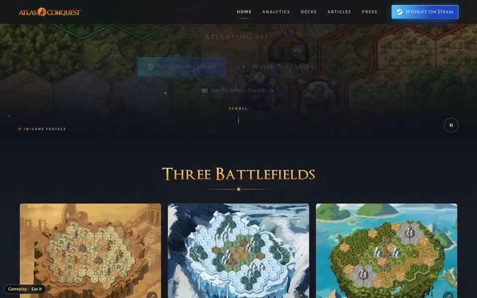
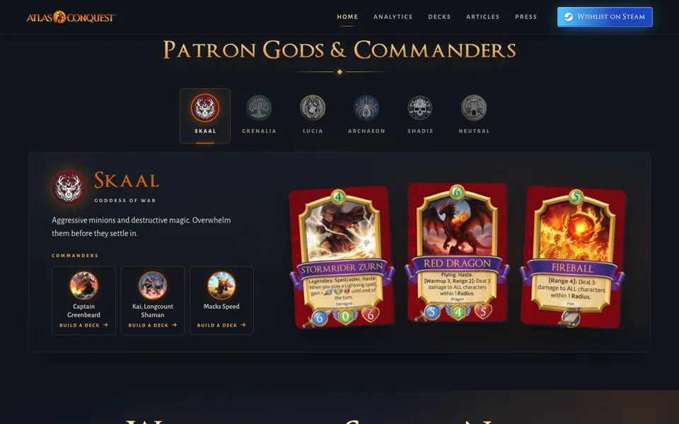

Homepage Section Options
Round four. Each option is the full Layout D homepage with only that one section swapped, so you can judge it in context. Look at each on your phone too. Votes and notes go on the team’s feedback board.
Layout D as it stands · Preview hub
Gameplay
“gameplay section is mid… reshowing trailer is mid… it is sort of wall like especially on mobile and slightly annoying videos don't expand”
Three new takes that use footage the trailer never showed, drop the trailer button, and let every clip open big. Or cut the section and let Three Battlefields carry the gameplay.
 Now
NowCurrent: four clip cards
The four hover-to-play cards with the trailer button, as you saw them.
 Option A
Option AA · Media viewer
One big stage with six picks beside it: four clips the trailer never showed, a real match screen with cards in hand, and the deck editor. Nothing plays until you pick one, and the corner button opens them full screen.
 Option B
Option BB · Four beats, one stage
The four beats (Play, Expand, Command, Conquer) as a short list beside one big player, each with its own clip. On phones the beats become chips under the player.
 Option C
Option CC · Read the board
One real match screenshot with five gold markers: your hand, land and mana, attacking, your commander, your opponent. Each explains a rule in two sentences and opens a clip.

CutCut the section
No Gameplay section: the hero goes straight to Three Battlefields. Shorter page, less to scroll.
Three Battlefields
“my only gripe about three battlefields is i find the motion to be a bit nauseating”
Now calm: each panel is Matan's new whole-map still and nothing moves on hover. Click a map to open its fly-over big, at normal speed, with arrows between the three maps.
Patron Gods & Commanders
“patron gods and commanders are mid”
Two art-first takes with less text: a commander roster, or six god panels built from signature card art.

NowCurrent: god tabs
Six god tabs; each shows the god, a line of playstyle, three cards and its commanders.
 Option A
Option AA · Commander roster
Choose Your Commander: all 16 commanders as big art tiles. A god chip dims everyone else; tap a commander for its ability and a Build a deck link.
 Option B
Option BB · Six gods
Six tall god panels in faction colours, made from each faction's legendary key art. Pick one to see its playstyle, three cards and its commanders.
Wishlist on Steam (finale)
“we like wishlist on steam (computer version leaves a bit to be desired tbh)”
A desktop-only pass. Mobile stays exactly as it is.